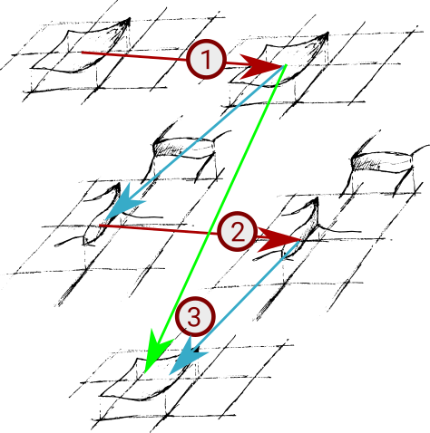
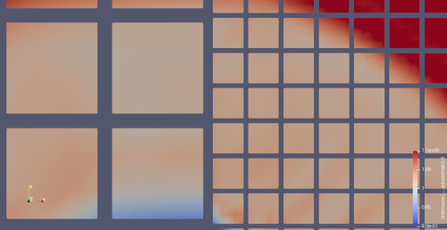
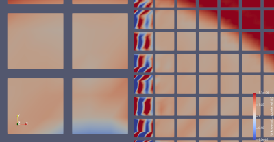

ADER-DG conceptually consists only of three steps: prediction, Riemann solve and correction. While this is conceptually simple, challenges arise once we consider dynamic AMR or local time stepping. This section discusses different ADER-DG implementation flavours. The flavours differ in the way they map the three core steps onto mesh traversals.

It is important to reiterate the data dependencies and to introduce some intermediate steps which are required to couple the core algorithmic steps:
- The prediction uses the cell data and determines an (educated) solution guess over the cell in space and time. This is step (1) in the sketch above. We keep the guess at the terminal time and
- we project both the space-time solution as well as the space-time fluxes within the cell onto the faces and onto the terminal time. The faces now hold an approximation of the values and fluxes at the terminal time.
- We solve the Riemann problem on the faces using these projected values. This is step (2) from the sketch.
- We backproject the solution of the Riemann solves into the spatial cell domain and compute its additional contribution on top of the guess for the final solution. For linear PDEs, this compute step simplifies, as we can integrate over the Riemann solutions first and then only project the final result in time on the face onto the final slab on the cell. There's no need to project back into a space-time volumetric representation first.
- We correct the educated guess using the backprojected data and obtain a new solution. This is step (3) in the sketch above.
To discuss the temporal logic of these steps, it is important to reiterate that Peano runs through the underlying spacetree in a top-down fashion and users can only plug into vertex, face and cell events. That is, we can never access the adjacent cells of a cell or a face, and we have no control over the order of the traversal. We only know that it follows these top-down/bottom-up constraints.
Algorithmic blueprint of a two-sweep realisation
As we distinguish plug-in points for cells from plug-in points (events tiggering actions) for faces, we can map a vanilla version of one ADER-DG step onto two mesh traversals:
- Primary sweep
- touchCellFirstTime(): Compute the predictor and project the predicted solution onto the face. This could alternatively also happen within touchCellLastTime(). As we usually work on the finest level, the last touch - which is the action when the tree traversal automaton backtracks - happens immediately after the first touch. In our code, the projection to the face is directly integrated with the predictor. This allows us not to have to store the entire space-time solution and to reuse the flux computations in the predictor for the projections, which means we both don't need to recompute the fluxes on the projected values and have more exact approximations for the fluxes on the face.
- After touchFaceLastTime: Send out the projected data to neighbouring trees if we employ domain decomposition. This happens automatically and is championed by Peano's core. The step works with consolidated data, as touchFaceLastTime() happens after touchCellLastTime().
- Secondary sweep
- Before touchFaceFirstTime(), we merge incoming data from other tree partitions. From hereon, we have a valid, consistent view of the predicated data on a face from the left and right side. This step is championed by Peano's core.
- touchFaceFirstTime(): Solve the Riemann problem and store the outcome within the face.
- touchCellFirstTime(): We know that touchFaceFirstTime() has already been called for the 2d adjacent faces of the cell. Therefore, we can now correct the solution. This step also could be realised within touchCellLastTime().
Alternatives
For a serial code, we could solve the Riemann problem straightaway in touchFaceLastTime(). touchFaceLastTime() is invoked after touchCellLastTime() (see Peano's generic description of the order of events over action sets) has been called for both adjacent cells. While this is an appealing idea, as it means that we could throw away the projected data and keep only the Riemann solve result, this would break down in a parallel setup, where each subdomain has to send out its contribution first and we then have to merge these partial data sets prior to the next grid sweep.
Adaptive mesh refinement
In the context of adaptive meshes, it is important to take into account that
- hanging faces are not persistent in-between two mesh traversals;
- we run through the spacetree in a top-down order.
This is reflected by the order of the events. Therefore, whenever we project a solution onto a hanging face in step (1), this information will be lost after this mesh traversal. We have to save it by moving the information from the face to the next coarser level.
A straightforward implementation of ADER-DG for adaptive meshes hence commits to a solve Riemann problem only on persistent faces and project outcome onto hanging faces policy:
- Primary sweep
- When a hanging face is destroyed, we project the valid half of the projected solution onto the next coarser level.
- At the end of the primary sweep, all persistent faces have valid projected data, even though some of these data might be concatenated from finer, hanging faces.
- Secondary sweep
- Solve the Riemann problem on the persistent faces, i.e. over the restricted projected solutions.
- Project the outcome of the Riemann solve into hanging faces within createHangingFace. There's no need to solve the Riemann problem here once more, as we now have already the valid outcome and can make that one feed into the correction step.
Unfortunately, it seems that some solvers suffer from inaccurate Riemann solutions that arise from the interpolation. While we are unsure exactly what causes this our current assumption is that this is caused by one of two things: either the concatenation of the fine faces or solving the problem on the coarse face causes information to move too quickly, therefore forming important gradients that lead to instabilities.


If we want to solve the Riemann problem on the fine (hanging) faces, we have to be very careful:
- We do not know the order of the mesh travesal events. Notably, we cannot assume that all adjacent cells of a hanging face have already been traversed when we enounter destroyHangingFace, as one adjacent cell is coarser than the other face's cell. The solution is therefore in general not available. Hence, we cannot solve the Riemann problem in the primary sweep. It would also violate the validity of the realisation in a parallel environment.
- If we manage somehow to realise the Riemann solves within the second mesh traversal we have to get this outcome back onto the coarser face for the correction of the adjacent coarser cell. The correction can be moved into touchCellLastTime but we cannot guarantee whether the coarser adjacent cell has been traversed before (aka its touchCellLastTime has been called before) or not becaue we do not know in which order the traversal automaton descends into the different branches of the spacetree. If it has been the cell could not make use of the solution in that grid traversal anymore.
Therefore, a fine grid solve is only possible if we modify our algorithm blueprint:
- In the primary sweep, we run the predictors and project the outcomes onto the faces. Projections onto hanging faces will be lost, but we know that each persistent face will contain valid data from all adjacent cells now if these cells are fine grid cells i.e. carry a solution. This step is not modified.
- In the secondary sweep, we
- solve the Riemann problem on all persistent faces in touchFaceFirstTime.
- interpolate the solution of coarser levels onto the hanging faces in createHangingFace;
- rerun the prediction for cells which are adjacent to a hanging face. Due to this step, every hanging face now has a valid solution representation from the left and the right side before we destroy the face.
- run the Riemann solve for all \( 2d \) adjacent faces of a cell which is adjacent to an AMR boundary (aka hanging face). This is done only(!) for these cells. One could check each of the adjacent faces if they are hanging or not to avoid redundant calculations. This is an optimisation.
- run the correction immediately for those cells which are adjacent to hanging faces. For all the other cells, the corrector is not called yet. In particular, it is not called in the coarser cells adjacent to an AMR boundary, as this would result in incorrect data, since the fine grid solutions haven't been restricted yet.
- restrict the outcome of the Riemann solve within destroyHangingFace. This restriction overwrites or corrects the fluxes onto the coarser face and ensures that all fluxes are consistent.
- In the tertiary sweep, we
- apply the corrector to all cells which are not adjacent to hanging faces on their level.
There is a price to pay for this realisation: Some predictions are done twice (along the AMR boundary) and we traverse the mesh thrice rather than twice. The latter is mitigated by the fact that we can work with smart pointers for the actual data, i.e. not that much data is shoveled through the memory subsystem, but it is a severe overhead. The former can likely be optimized by recognizing whether we are adjacent to a hanging face, which is not yet available. Given that the predictor is by far the most expensive operation in Ader-DG, this optimization should be quite a priority. Nevertheless, it makes sense to maintain both ADER-DG realisation variants: One working with two sweeps and one working with three sweeps.